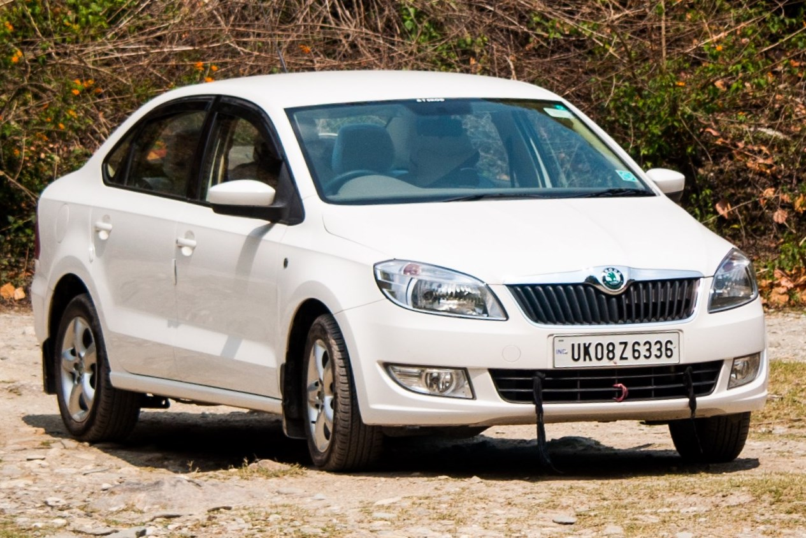
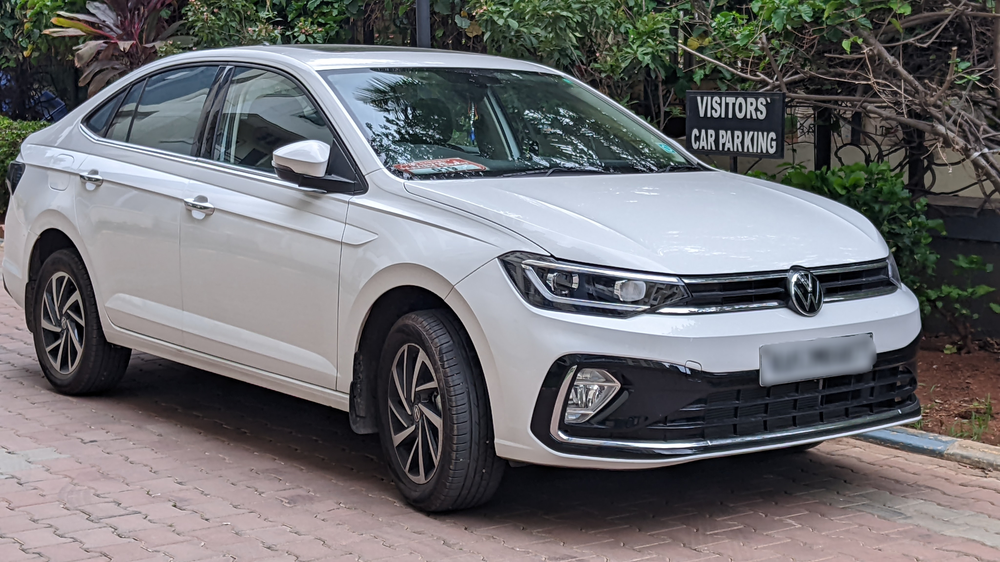

Rapidmore_vert
Rapidclose
Skoda Rapid is a 5 seater Sedan. It is available in 27 variants, 1498 to 1598 cc engine options and 2 transmission options : Manual and Automatic.

Virtusmore_vert
Rapidclose
The Volkswagen Virtus has 2 Petrol Engine on offer. The Petrol engine is 999 cc and 1498 cc . It is available with Manual & Automatic transmission. Depending upon the variant and fuel type the Virtus has a mileage of 18.12 to 20.8 kmpl & Ground clearance of Virtus is 179mm.